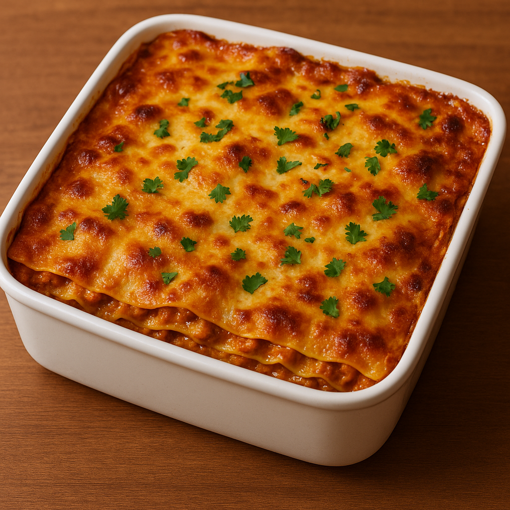

Butter Chicken Lasagna
An indulgent Italian–Indian fusion where layers of creamy butter chicken curry replace traditional ragù, combined with cheesy béchamel and lasagna sheets for a melt-in-your-mouth experience.
For the Butter Chicken
- 500 g boneless chicken thighs, diced
- ½ cup yogurt
- 1 tbsp lemon juice
- 1 tsp turmeric powder
- 1 tsp chili powder
- 1 tsp garam masala
- 1 tbsp ginger-garlic paste
- 2 tbsp oil or ghee
- 2 medium onions, finely chopped
- 3 medium tomatoes, pureed
- 1 tsp cumin powder
- 1 tsp coriander powder
- ½ tsp cinnamon powder
- ½ tsp kasuri methi (dried fenugreek leaves)
- 200 ml cream
- Salt to taste
For the Béchamel Sauce
- 3 tbsp butter
- 3 tbsp all-purpose flour
- 3 cups milk, warmed
- ½ tsp nutmeg powder
- Salt & pepper to taste
For Assembly
- 9–12 lasagna sheets (pre-cooked or boiled as per package instructions)
- 1 cup mozzarella cheese, grated
- 1 cup cheddar cheese, grated
- Fresh coriander or basil leaves for garnish
How To Prepare:
-
Make the Butter Chicken
- Marinate chicken with yogurt, lemon juice, turmeric, chili powder, garam masala, and salt. Set aside for 30 minutes.
- Heat oil/ghee in a pan. Sauté onions until golden brown. Add ginger-garlic paste and cook until fragrant.
- Stir in tomato puree, cumin, coriander, and cinnamon. Cook until oil separates.
- Add chicken pieces and cook through. Stir in cream and kasuri methi. Simmer until thick and luscious.
-
Prepare Béchamel Sauce
- In a saucepan, melt butter. Add flour and whisk for 1–2 minutes.
- Gradually add warm milk, whisking to avoid lumps.
- Add nutmeg, salt, and pepper. Cook until creamy and smooth.
-
Assemble the Lasagna
- In a baking dish, spread a thin layer of butter chicken.
- Add a layer of lasagna sheets, then a layer of béchamel, then mozzarella & cheddar.
- Repeat layers until the dish is full, finishing with béchamel and cheese on top.
-
Bake
- Bake at 180°C (350°F) for 25–30 minutes until golden and bubbling.
-
Serve
- Garnish with coriander or basil leaves.
- Serve hot with garlic bread or salad.